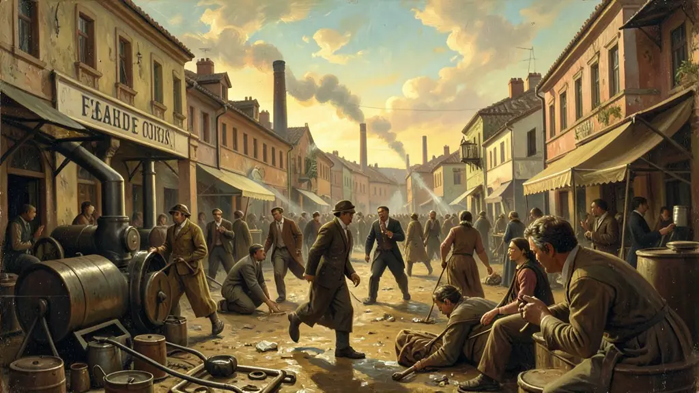
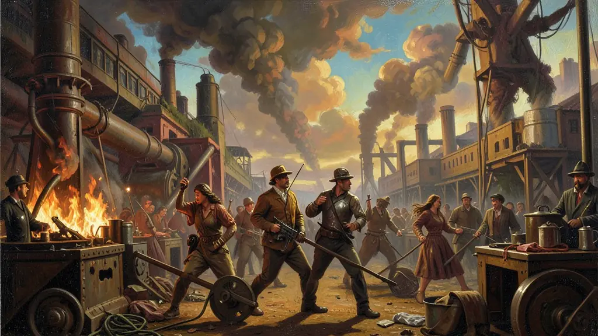
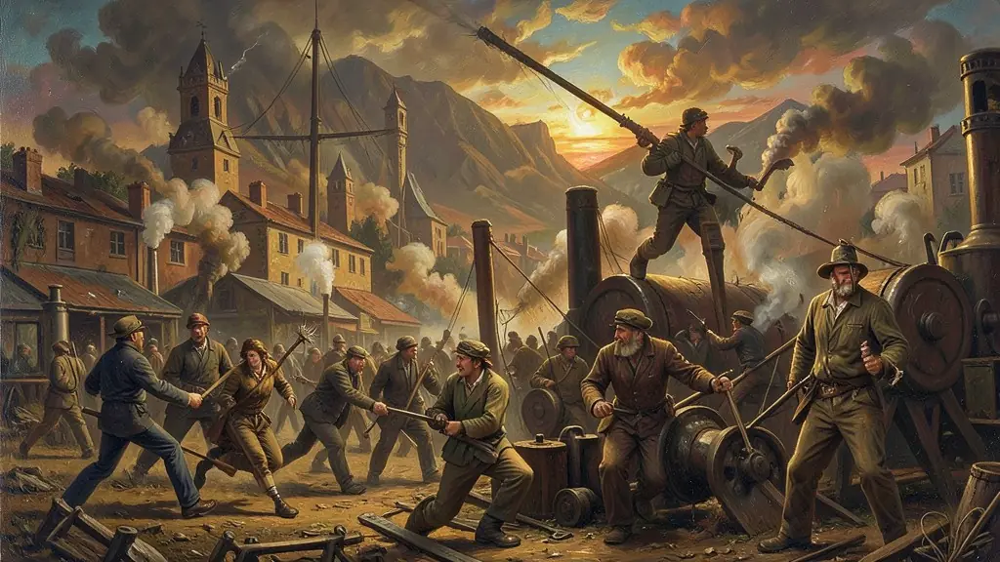

Capítulo 01
1. Fábricas e Cortiços: O Cenário da Exploração
No Brás e na Mooca, em São Paulo, as chaminés das fábricas eram cercadas por vilas operárias onde o trabalhador era oprimido 24 horas por dia. O patrão era dono da fábrica e da casa do operário. O barulho das máquinas e a poeira têxtil destruíam a saúde de crianças de 10 anos que trabalhavam à noite para sustentar a família. Não havia leis: o chicote havia sido trocado pelo relógio de ponto, mas a opressão era a mesma.

Capítulo 02
2. Anarquismo: Nem Deus, Nem Mestre
Os anarquistas italianos não queriam votar; queriam destruir o sistema. Eles diziam que o patrão e o governo eram os inimigos. Através de jornais como 'La Battaglia' e de grupos de teatro operário, eles educavam o trabalhador para a revolução social. Pregavam a autogestão e a solidariedade, acreditando que a greve geral seria o grande golpe final contra a sociedade capitalista burguesa.

Capítulo 03
3. 1917: A Cidade sob as Nossas Mãos
O funeral de José Martinez transformou-se em uma marcha fúnebre de milhares de pessoas. As ruas de São Paulo viraram trincheiras. Os operários sentiram, pela primeira vez, que podiam vencer. A greve de 17 foi vitoriosa em parte: os patrões prometeram 20% de aumento e não demitir os grevistas. Mas assim que a calma voltou, as promessas foram quebradas e a polícia voltou a caçar os líderes operários no meio da noite.

Capítulo 04
4. A Lei Adolfo Gordo e o Medo das Elites
O governo republicano viu na greve a 'mão estrangeira'. O senador Adolfo Gordo criou a lei de expulsão: qualquer imigrante que fizesse propaganda de greve era colocado num navio de volta para a Europa, perdendo tudo o que construiu aqui. O Estado tratava o operário não como cidadão, mas como perigo público ou bando de arruaceiros, justificando o uso da cavalaria e das baionetas em cada esquina sindical.
Capítulo 05
5. De 1922 ao Trabalhismo Varguista
Em 1922, o PCB nasceu em Niterói para dar um rumo 'organizado' à luta. O anarquismo perdia força para o comunismo disciplinado de Moscou. No entanto, o sistema republicano só caiu em 1930. Vargas, percebendo que a repressão policial não bastava mais, criou o Ministério do Trabalho para legalizar o que os operários já haviam conquistado e acalmar as ruas. A luta operária forçou o Estado a mudar, mas perdeu parte de sua autonomia no processo.
A Primeira República foi palco do alvorecer beligerante e de repressões massivas do chamado nascente operariado urbano e incipiente fabril do Sudeste. Formado substancialmente de italianos, espanhóis e egressos nacionais de parcos rendimentos o nascente proletariado nacional mobilizou um combativo protesto ideológico predominantemente assentado nas ideologias radicais originárias libertárias (imigração) sob os tentáculos diretos do anarcossindicalismo na recusa a tutelagens da república do voto corrupto.
O epicentro magno do protesto desta labuta degradante materializou-se concretamente deflagrando a grandiosa e histórica 'Greve Geral de 1917'. O apelo pelas reivindicações mínimas por horários não excruciantes e abolição das penalizações e chibatas nas linhas fabris por lideranças grevistas demonstrou inquestionávelmente as fraturantes contradições estruturais submersas na efervescente paisagem de fábricas nascentes de edifícios industriais.
Ao Enem e a intepretação social profunda convêm perceber que aos movimentos paredistas operários opuseram-se uma classe conservadora, repressiva estatal hermeticamente aliada que tratava sumariamente a agitação fabril 'não com legistlações apaziguadoras trabalhistas', e sim as categorizavam nos registros estatais como famigerada estritamente 'Questão de Polícia' passivo aos flagelos das prisões desterros ou deportações do famigerado anarquista rebelado.
Fonte: FAUSTO, Boris. Trabalho Urbano e Conflito Social. São Paulo: Difel, 1976.
Atividades interativas
Questões para fixar
O movimento operário brasileiro no início do século XX teve forte influência de imigrantes europeus. Qual era a corrente ideológica predominante entre os líderes grevistas de 1917?
A frase 'A questão social é um caso de polícia', atribuída ao presidente Washington Luís, expressa qual visão das elites da República Velha sobre as demandas operárias?